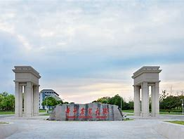

华中农业大学，简称“华农”，位于湖北省武汉市，是中华人民共和国教育部直属的一所以生命科学为特色，农、理、工、文、 法、经、管协调发展的全国重点大学；国家“双一流”建设高校，国家“211工程”、“985工程优势学科创新平台”重点建设高校，入选高等学校学科创新引智计划、卓越工程师教育培 养计划、卓越农林人才教育培养计划、国家建设高水平大学公派研究生项目、新工科研究与实践项目、新农科研究与改革实践项目、中国政府奖学金来华留学生接收院校、全国深化 创新创业教育改革示范高校、首批高等学校科技成果转化和技术转移基地，为武汉七校联合办学成员。